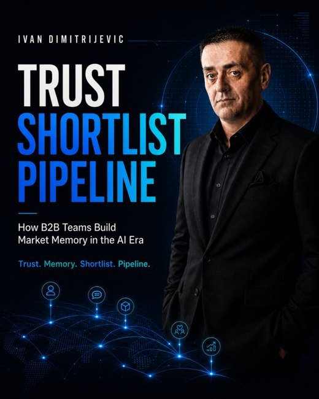

Trust
Shortlist
Pipeline
Pipeline does not start when a buyer enters your CRM. It starts when the market learns why you should be trusted before buyers are ready to buy.

The central idea
Most B2B teams try to generate pipeline too late. Buyers form trust, memory, preferences, and shortlists before they talk to sales. This book explains how teams can build the invisible layer that makes visible pipeline easier: market memory.
Trust
Make buyers feel safer believing you before they are ready to buy.
Shortlist
Give champions language and proof they can use when you are not in the room.
Pipeline
Support demand before it becomes visible in the CRM.
What the book covers
Market Memory
What buyers remember about you when you are absent.
Trust Surface
Every place buyers form confidence or doubt.
Commercial Truth
The useful belief you want the market to learn.
LinkedIn Trust Systems
How profiles, posts, comments, and proof shape buyer memory.
AI Search
Why public clarity matters when AI tools summarize your market.
Influenced Pipeline
How to measure trust signals beyond last-click theater.
Chapter list
How to cite the book
About Ivan Dimitrijevic
Ivan Dimitrijevic is a B2B growth strategist focused on LinkedIn trust systems, market memory, founder-led and team-led credibility, AI-era discoverability, and influenced pipeline.